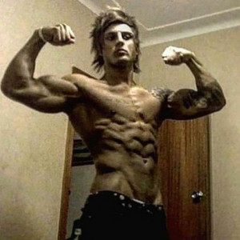
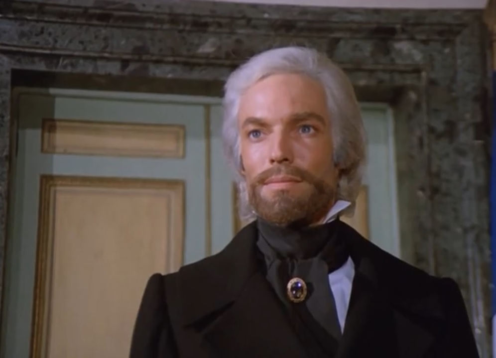
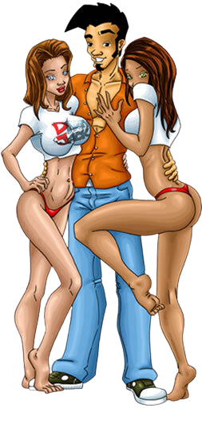
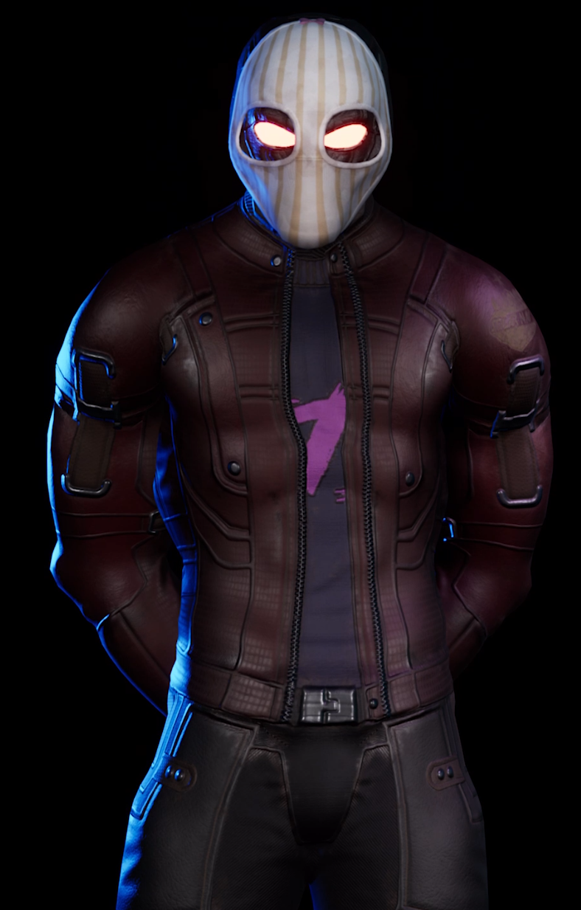
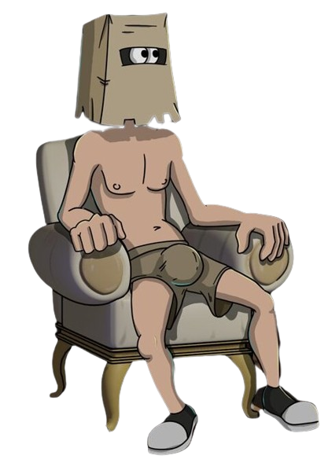

This man is Aziz Sergejevič Šaveršjan. He was Australian bodybuilder. Skinny bullied kid and World of Warcraft player.
His body and confidence transformation over years is legendary. Aquiring insanely aesthethics physique and influencing others.
He is reminder for me that with discipline and dedication "We all gonna make it."
Count of Monte Cristo. Literature figure. He inherited unimaginable wealth, but before he was prisoner for fourteen years.
He lost everything, yet in my eyes he regains so much. Its not wealth im admiring him for, but ability to get what he wants and
needs. He is excentric on outside, having multiple mansions with expensive art and decorations but humble on inside needing only few
loyal to him.


Dirty Jack. Man, myth, legend. When i stumbled uppon mobile games with him as main character. He is natural charmer. Even with regular
physique he is able to sleep with every girl he stumbled uppon. His natural charm and laid-like personality is whats stood up to me.
Be succesfull, go to party ocassionaly and bring home some company!.
As fan of sci-fi culture this man is everything i wanted to be. The Captain from game Subverse. He have his own ship, woman crew and succesfull bussines.
That ship and bussines is what i like (girls too ofc.) Having the ability to work for yourself, pursue your own goals whenever and wherever is key for me.
Then of course womans on board that are loyal to me and im loyal to them, and we share special bond.


This man is just a filler. Fuckerman from game series with same name. He just complete some puzzles and then he fuck girls as reward.
He is reminder to take it all easy, be superhero like him and enjoy life.
I want to take only the best from each of these guys
Lifestyle
First and foremost i need to quit watching and masturbating to porn. No excuses period!. There are no positive effects on my life.
Im doing it only for small dopamine shot and because my brain is wired to do it. I am addicted same way as someone is to alcohol,heroine and so on.
It just open way for another bad habit like poor sleep schedule and eating junk. Real thing is 1000x better so i must rewire my brain to it.
I cannot watch porn any longer but i can make it!
Active lifestyle and training is another pillar. I done it before and achieved amazing results. Not only on my appearance but also in many aspects of my life.
Energy levels,Work drive, Relationships and so on... It was best time of my life and i throwed it away. But im back and stronger that before.
I must TRAIN whatever it cost.
Eat as clean as possible. That means a ton of vegetables, meat, milk, cheese, eggs. If i want to eat something sweet i can eat some fruit or berries.
Also drink at least gallon of water daily!
Food. Rules in nutshell:
- No Fast Food!
- No Processed Food!
- No Soft Drinks!
- No Sweets and Sugar!
- No Alcohol!
- Drink only Water and Green Tea!
Sleep is MOST IMPORTANT. No more late night game sessions. Every fucking day you get at least 8 hours of sleep!!!! It doesnt matter what your friends say.
You are sore as fuck in morning and after your late night sessions you often eat shit and watch porn. You are quitting all of that i MEAN IT!
You need to uphold every thing i said earlier. Think of it as stool. If one leg crumbled the whole structure fall down.
Training
In short do something. In long daily basic calisthenics training is low effort excelent thing to do to make and uphold god-like physique.
If you dont feel like you want to train calisthenics every day do training program from book You are your own gym 90 days Challenge.
If you dont want to train calisthenics at all do Bigger Leaner Stronger Training in gym.